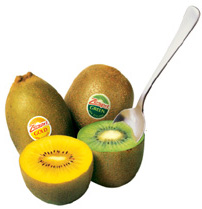

美味猕猴桃 (别名：光阳桃，软毛猕猴桃)
大型落叶藤本，株高10米以上，枝多被有黄褐色长硬毛，毛脱落后残迹显著。冬芽被长茸毛鳞片，常包埋于皮下，仅见小孔，半裸露或簇生长茸毛。叶宽卵形到倒卵形，叶柄有黄褐色长硬毛。雌花较大，直径约3.5厘米。果实上有硬粗毛。
中华猕猴桃 (别名：光阳桃，软毛猕猴桃)
大型落叶藤本，株高8米以上。幼枝被灰白茸毛，毛易脱落秃净。冬芽被毛茸鳞片数枚，呈现裸露状。叶宽卵形到椭圆形。雌花直径1.8～2.5厘米，雄花点径1.5～2.1厘米，果实褐绿色、黄褐色，上被有柔软茸毛或粗糙绒毛，毛易脱落。
返回首页|公司简介|产品展示|供应信息|采购清单|企业荣誉|联系方式|客户留言
水果专业网站 版权所有 Copyright © 2008 xxxxxx.com